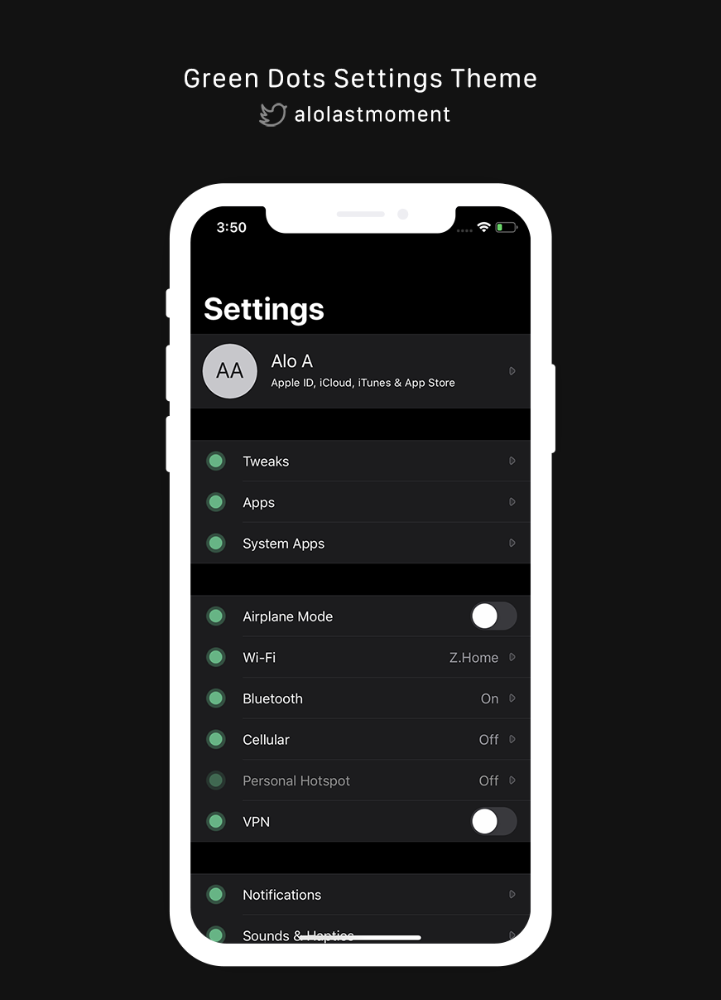

A very simple Settings theme that uses round green dots. Almost all settings icons are themed. The original design was by Cody Webb.
It looks great on light and dark backgrounds. Just take a look at the screenshot!
